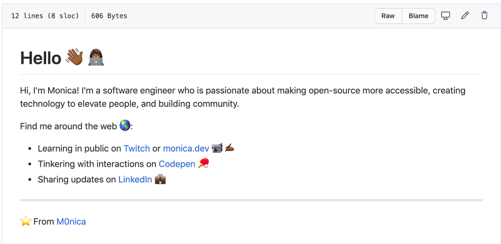
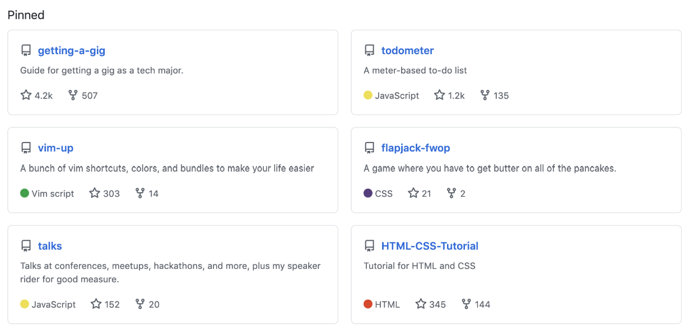

Module 5: Career Readiness
Transitioning from Labs to Job Search
Now that you've completed your Labs project, it's time to leverage your experience to find a job in the tech industry.
Career Tip
Your Labs experience is a valuable portfolio piece! Be prepared to discuss:
- The challenges you overcame
- How you collaborated with your team
- Technical decisions you made and why
- What you would do differently next time
- The impact of your contributions to the project
Career Coaching
Learn how to leverage career coaching resources to maximize your job search success.
Career Coaching
Job Outreach Strategies
Learn effective strategies for reaching out to potential employers and building your professional network.
Goal: Outreach to 5 Jobs
Draft and send 5 cold emails, tracking your outreach in Job Tracker.
Finding Contacts to Reach Out To
The goal of outreach is to make contact with your future employer.
Overview
In your outreach, you want to get as close as possible to your future team. Here's how to prioritize people at the company you're applying to, and what tools to use.
! Who to prioritize in your outreach !
#1 Your Future Boss
Your top priority in your outreach is to find your future boss. Titles to look out for include:
- Engineering Manager
- Data or UX Team Lead
- Head of Engineering, Head of Data, Head of Design
- Technical Team Lead
- VP of Engineering
#2 Your Future Peer
If you can't find your future boss, your second priority is to reach out to a future peer. Someone at the company who holds the same title as the one you are applying to. ⭐️ Bonus points if they have a non-traditional pathway into tech or similar background to you! ⭐️
#3 a Non-Technical HR or People Team Member
If you can't find either of the above, at the very least contact a technical recruiter or member of the People/HR team. These people are great to contact in addition to the list above, but shouldn't be the only people you contact unless you absolutely can't find anyone technical to reach out to.
Outreach to Jobs
🧰 Your tools
- LinkedIn's in-site search tools
- This Google search term to "Xray scan" LinkedIn: site:www.linkedin.com/in "company name" "role" "additional keywords, i.e city"
- Lambda Job Tracker
Next Steps
⏱ Give yourself time to find the right contacts: up to 10 minutes per job
Finding the right people to contact is the most manual part of the application process but also the most important. The more time you give yourself to find the right person, the more likely you are to be flagged in the ATS (Applicant Tracking System).
Reserve at least 10 minutes per job to find the right people to outreach to. This will get faster as you practice, but make sure you block out enough time to find the right people to contact.
📧 Send 5 cold emails
Now that you're a Master of Outreach™️, send 5 cold emails using the techniques we've covered. Just do it!
When you've sent 5 cold emails and tracked your outreach in Job Tracker, your progress will be reflected here. It may take some time for the assignment to update.
Outreach Template
Hi [Name],
I hope this message finds you well. I recently came across the [Position] role at [Company] and I'm very interested in learning more about this opportunity.
I'm a backend developer with experience in [technologies], and I recently completed a project for [describe Labs project]. I'm particularly drawn to [Company] because of [specific reason related to the company's work, culture, or mission].
I'd love to connect with you to learn more about the role and share how my skills and experience might be a good fit. Would you be available for a brief conversation in the coming week?
Thank you for your time and consideration!
Best regards,
[Your Name]
Outreach Tips
- Personalize every message - Show you've done your research
- Be specific - Mention why you're interested in that particular company
- Keep it concise - Respect the recipient's time
- Offer value - Show how you can contribute to their team
- Follow up - If you don't hear back within a week, send a polite follow-up
- Track your outreach - Use a spreadsheet or tool to manage your connections
Apply to 5 Jobs
Goal
Apply to 5 jobs and track them in Job Tracker
Submitting Quality Applications
Job searching is tiring! Especially when you don't hear back from companies.
Some job seekers take a quantity approach to their search, submitting applications through "one-click" or "easy apply"- you upload your resume and call it a day. The act of clicking submit might feel productive in the moment, but days or weeks later this approach doesn't often produce the desired result - an invitation to an interview. You might as well call this approach the application or resume black hole.
If you want a higher response rate on applications you need to:
- Submit a quality application, then…
- Follow-up on that application by reaching out to a human
What makes an application a quality application?
- ☑️ Apply to a posting that has been live within the past 2 weeks.
- ☑️ Apply directly through a company's website.
- ☑️ Have 50% (or more) of the requirements or preferred qualifications.
- ☑️ Use a strong and relevant resume to apply.
Following Up on Quality Applications
Now that you know how to submit quality applications, time to deep dive into app follow-up. When you submit an app your work isn't over!
You need to try to get your app seen by a human so it doesn't languish in the ATS.
➡️ Fast facts about follow-up:
- Follow-up means contacting a person who works at the company you are applying to. You might hear the Careers Team refer to this as "outreach" or "cold contacting" as well.
- Lambda grads get the best results from follow-up emails. But you can also connect with someone via a LinkedIn connection request + with an attached note, a LinkedIn InMail message, a Twitter DM, etc.
- Your top priority when you outreach is to your "future boss" or the technical stakeholder for the role. If you can't find this person, find a "future peer" or someone who holds the same title as you on the team. Bonus points if they have a similar pathway into tech.
The most important thing is that you make contact with an actual person involved with hiring for the role you're applying for. Don't skip this step - outreach is unavoidable in a successful job search!
🚫 The ATS is, sadly, not your friend.
To understand why we outreach, it's useful to understand exactly how an Applicant Tracking System (ATS) works. When you apply to a role, your app lands in a database of many other names. Because no one has time to review every single app submitted for a job (not even for the proverbial 7.4 seconds) the hiring team needs to use the ATS to cut the list to a manageable size.
Teams can filter on things like years of experience, location, or things that were listed as "nice to haves" in the description. It actually doesn't really matter what a hiring team filters on, because you simply can't customize your resume for every filter out there.
📧 Outreach is your friend!
Instead of customizing your resume for every possible filter a hiring team might use, it's more efficient to use outreach to get yourself on the hiring team's radar. Don't wait for an ATS to surface you, your outreach increases the chance someone will pull up your app.
No matter where you are in the ATS, filtered out or not, they can search for your app. Outreach is an important tool to advocate for yourself in the hiring process. Get around the ATS, and do your best to ensure that the time you spent on your quality application doesn't go to waste.
🤔 What about my quality application?
You might be thinking — hold on. I spent time on my application, submitted it through the company site, applied within 24 hours of the role being posted, I'm a 50% match for what they are asking for.
Won't the team know my name by those steps alone?
...maybe. Sometimes you'll get invited to interviews without outreach, especially when you're among the first to apply. But in your job search, you want to operate on more than maybes! Outreach increases the potential for someone to see your quality application.
Next Steps
Apply to 5 jobs, tracking their status in Job Tracker. Use our criteria for quality:
- ☑️ You meet at least half (50%) of the qualifications
- ☑️ Job posting is less than 2 weeks old
- ☑️ Applying directly to the company using their website
- ☑️ Use a resume that emphasizes keywords and skills needed for the job
On the next page, you'll move on to implement the most critical step: sending an outreach note to a talent or technical professional at each company.
Career Readiness in Labs
In this module, we'll walk through the process you'll follow in Labs to get your resume, LinkedIn profile, and GitHub profile fully career-ready by incorporating your Labs project. You'll also ensure your Learner Profile is up to date!
Just like in Applied CS, you'll submit your Career Artifacts as part of this module. You'll prepare by reviewing the resources in this module and preparing your project information. Your Resume Reviewer will evaluate them and provide feedback as necessary.
If one or more of them still needs work, you'll get targeted feedback on how to improve them, and you'll be able to resubmit them once you've made the required revisions.
At that point, you'll also have the option to schedule a live, one-on-one review session. This session builds on the work you put in last unit—your Resume Reviewer will work with you to incorporate your Labs project and finalize your artifacts before graduation.
Regardless, though, if all your artifacts still aren't passing after two submissions, you'll be required to schedule a review session.
Launching Your Job Search
Since Labs is also officially the start of your job search, you'll find plenty of resources and instructions in the Job Search course in Canvas—but for our purposes here, you'll need to source, apply to, and conduct outreach to at least five jobs to pass this course!
Resume Prep
Use the Resume Template
Note: If you attended and passed Applied CS, your resume is hopefully already adapted to the template. If not, please ensure it is before submitting it!
We've done our fair share of homework here (trust us on this!), and we've refined everything we've learned about what works into a template that optimizes for getting across the critical information hiring managers are looking for, fast.
⚠️ You'll need to use the template for your track to pass Labs:
Technical Content
Read these first!
- Read this powerful yet brief article on crafting strong bullet points. Read this to learn how to draft a winning bullet point and see some great examples.
- Use these action verbs for your resume. See our recommended action verbs as well as additional action verbs recommended by Harvard.
Update Your Technical Bullet Points
Now you're ready to update your technical bullet points to reflect the projects you've worked on.
If this is your first time writing technical bullet points, start by first writing down what you did for each project in as much detail as possible. Then move on to editing those into stronger bullet points.
⚠️ Remember to include your Labs project prominently! If you feel you haven't contributed significantly enough to your project, work with your team to get unblocked. You should be pushing commits daily!
The Resume Checklist
Take a quick breather—then go through our Resume Checklist.
When you've finished, make sure to mark this page as Done below!
LinkedIn Profile Prep
Setting Up Your LinkedIn Profile
Note: If you attended and passed Applied CS*, your LinkedIn hopefully already reflects these instructions. If not, please ensure it does!*
Now let's turn to LinkedIn. Our goal is to maximize the attention your profile gets proactively from recruiters and ensure your profile represents a strong professional brand.
Get a cup of coffee or tea, put on some Norwegian experimental jazz, and set aside a good chunk of time to do this entire thing.
Adding Technical Content
Start with this comprehensive guide from our career resources. Be sure to factor in the work you've done (and continue to do!) on your resume. You can transfer your technical experience almost verbatim!
GitHub Prep
Setting Up Your GitHub Profile
Note: If you attended and passed Applied CS, your GitHub profile hopefully already reflects these instructions. If not, please ensure it does before submitting it!
During your job search, you'll find that many applications ask you to link to your GitHub profile. Use GitHub as a tool to promote yourself and represent your skills. Make it as easy as possible for your prospective employer to imagine you as a contributing member of their team by showcasing your contributions to projects in an organized, compelling way.
Go through these initial steps to start leveling up your profile.
Profile Photo and Name
- Profile photo is a clear headshot, bitmoji, or avatar of myself, not the GitHub logo.
- Name and username displayed is professional and contains a variation of my name.
- Other relevant profiles like Portfolio or Twitter are linked in my bio.
Profile README
GitHub now features a profile README section that is customizable. This section will appear above your pinned projects, giving you the opportunity to do some branding and marketing about yourself. Check out the first 4 minutes of this video.
Also check out these templates and ideas to get you started on a personal README.
Include the following information in your README:
- Introductory message that welcomes viewers to your page
- 2-3 quick bullets or sentences that describe yourself: this can include passions, interests, expertise, and what you currently do
- Reference skills and expertise you have
- Contact information to let others know how they can send you a message
Here's a short and sweet example you can find in the open-source templates:
Pinned Projects:
Pin 3-6 non-sprint projects to the top of the page, prioritizing your most impressive projects and open-source contributions. Include at least a one-sentence description of each project.
Example:
The GitHub Checklist
Take a 5-minute break. Go out and walk your pet iguana. Or just pause to imagine* yourself on a beach with fine white sand, the waves slowly rolling in, as you recline on a fine chaise, your hand hanging off the edge holding an offer letter, and thinking to yourself: Wow—I'm sure glad I followed that GitHub Checklist.
(*Results not guaranteed. Beach not included. We would if we could.)
Checklist: Preparing for Your Career Review
Please prepare to submit your Career Artifacts by making sure your resume, LinkedIn profile, and GitHub profile are as ready as possible. They don't have to be perfect, but the more we have to work with, the more we can help your experiences shine!
Factor in your Labs project to all your career artifacts.
Make sure the permissions on your resume allow editing!
Resume Must-Have Conditions
| Done | Criterion | Description |
|---|---|---|
| ☐ | Format is based on the template and is clean and legible | There is consistent spacing and alignment between lines, the content, and all the elements in your resume |
| ☐ | Follows a reverse chronological format | You listed your jobs starting with the current or most recent one at the top, followed by previous ones below |
| ☐ | The correct tense is used to describe every project and work experience | If an action or accomplishment on your resume is in the past, you used the past tense. However, when speaking about a current role and current accomplishments, you used the present tense |
| ☐ | Optimized with keywords related to the field of interest | You included words or short phrases that relate to particular requirements for the job you're interested in.These keywords are critical to helping you get your resume noticed and flagged by an applicant tracking system (ATS) |
| ☐ | Error-free | If you read your resume from the bottom up, you'll find the resume is error-free/typo-free. In other words, there are no spelling, grammatical, or punctuation mistakes. |
| ☐ | Fits on one page | You demonstrated the ability to synthesize, prioritize, and convey the most important information about you by fitting your resume on one page |
| ☐ | Bullet points focus on achievements and results, not responsibilities | Your accomplishments stand by following the bullet point formula of accomplished [X] as measured by [Y] by doing [Z]. In other words, you started with an active verb, numerically measured what you accomplished, provided a baseline for comparison, and detailed what you did to achieve your goal |
LinkedIn Must-Have Conditions
| Done | Criterion | Description |
|---|---|---|
| ☐ | Is an All-Star Profile according to LinkedIn's profile strength measure | You used the resources in this module to level up your LinkedIn profile to All-Star status |
| ☐ | Optimized with keywords related to the field of interest | You included words or short phrases that relate to particular requirements for the job you're interested in. These keywords are critical to helping you get your profile noticed and flagged by an applicant tracking system (ATS) |
| ☐ | Optimized with top skills in the Skills & Endorsements section | You included everything you've learned at BloomTech |
| ☐ | The correct tense is used to describe every project and work experience | If an action or accomplishment on your resume is in the past, you used the past tense. However, when speaking about a current role and current accomplishments, you used the present tense |
| ☐ | Error-free | There are no spelling, grammatical, or punctuation mistakes |
| ☐ | Bullet points focus on achievements and results, not responsibilities | Your accomplishments stand by following the bullet point formula of accomplished [X] as measured by [Y] by doing [Z]. In other words, you started with an active verb, numerically measured what you accomplished, provided a baseline for comparison, and detailed what you did to achieve your goal |
GitHub Must-Have Conditions
| Done | Criterion | Description |
|---|---|---|
| ☐ | 16+ contributions | Contribution graph shows at least 16 contributions during your time in Labs |
| ☐ | Profile photo | Student has a photo of themselves or an avatar; attire and background is appropriate, photo is smiling or neutral |
| ☐ | Username | Username is simple/easy to remember and type (no long number strings) and includes user's name and/or initials |
| ☐ | Profile README | Profile README is present and introduces the student with content that is concise, clear, and error free |
| ☐ | Skills & expertise | Student references skills & expertise, including those gained at BloomTech |
| ☐ | Pinned projects | Pinned projects each have concise descriptions and include strong examples of project work. Repositories are consistently organized and easy to navigate |
When you've completed all three checklists, mark this page as Done below.
Interviewing Skills
Prepare for technical and behavioral interviews with these resources and strategies.
Technical Interview Preparation
- Review fundamentals - Data structures, algorithms, and system design
- Practice coding challenges - Use platforms like LeetCode, HackerRank, and CodeSignal
- Understand time/space complexity - Be prepared to analyze your solutions
- Mock interviews - Practice with peers or using platforms like Pramp
- Review your projects - Be ready to explain technical decisions and challenges
Behavioral Interview Preparation
- Use the STAR method - Situation, Task, Action, Result
- Prepare stories - Have 5-7 stories that showcase different skills
- Research the company - Understand their values and culture
- Prepare questions - Have thoughtful questions for your interviewers
- Practice common questions - "Tell me about yourself," "Why this company," etc.
Building Your Online Presence
Learn how to build a strong online presence that attracts recruiters and showcases your skills.
Key Components
- GitHub Profile - Clean repositories with good READMEs, diversify your projects
- LinkedIn Profile - Professional photo, compelling summary, detailed experience
- Portfolio Website - Showcase your projects, skills, and professional journey
- Technical Blog - Share your learning journey and demonstrate your expertise
- Open Source Contributions - Contribute to open source projects in your field
GitHub Profile README Example
# Hi there, I'm [Your Name] 👋
## Backend Developer specialized in Java & Spring Boot
I'm passionate about building robust, scalable backend systems. Recently completed
a full-stack application for tracking and reviewing code assignments.
### 🔭 Current Projects
- **Bloom Coder Assignment App**: A full-stack application built with Spring Boot and React
- **Personal Portfolio**: My portfolio website built with Next.js
### 💡 Skills
- **Languages**: Java, JavaScript, SQL
- **Frameworks**: Spring Boot, React
- **Database**: PostgreSQL, MongoDB
- **Tools**: Git, Docker, JUnit, Maven
### 📫 Connect with me
- [LinkedIn](your-linkedin-url)
- [Portfolio](your-portfolio-url)
- [Email](mailto:your-email@example.com)
---
[](https://github.com/anuraghazra/github-readme-stats)
Success Story
"After completing Labs, I spent two weeks improving my GitHub profile and creating a portfolio website that showcased my Labs project. I wrote detailed READMEs for all my repositories and started a technical blog where I explained the challenges I faced in Labs and how I solved them.
A recruiter found me through one of my blog posts and reached out about a backend developer position. During the interview, they mentioned that my detailed project documentation and technical writing skills set me apart from other candidates. I received an offer three weeks after my initial application!"
- Michael, Backend Developer at TechCorp